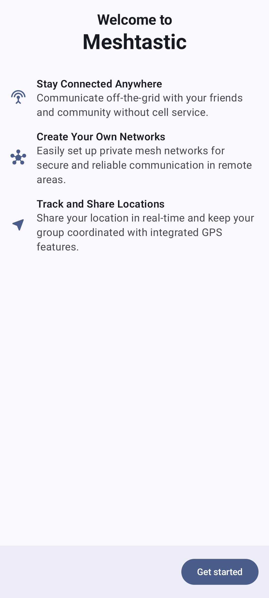

Welcome to Meshtastic! This guide walks you through the initial setup of the Meshtastic Android app.
When you open the app for the first time, you’ll be guided through an introductory flow that helps configure essential permissions and settings. Complete each step in order or skip it — nothing here is a one-time offer. Every permission can be reviewed and granted later from Settings → Permissions inside the app.
The welcome screen introduces Meshtastic with three feature rows:
| Stay Connected Anywhere | Communiquez en dehors du réseau avec vos amis et votre communauté sans service cellulaire. |
| Create Your Own Networks | Installez facilement des réseaux de maillage privé pour une communication sûre et fiable dans les régions éloignées. |
| Track and Share Locations | Partagez votre position en temps réel et gardez votre groupe coordonné avec les fonctionnalités GPS intégrées. |
Tap Get started to proceed through the setup flow.

The app requests several permissions during setup. Each one serves a specific purpose, and some are required for core functionality.
Bluetooth is the primary connection method between your phone and Meshtastic radio:
Grant both permissions when prompted. Without Bluetooth, you’ll need to use USB or TCP connections instead.
⚠️ Is location required for Bluetooth? On Android 11 and older, yes — those releases treat a Bluetooth scan as a location capability, so the app asks for Location instead of “Nearby devices”, and system Location Services must also be switched on for a scan to return anything. There you will see one location step rather than two, on the Bluetooth screen, because it is a single system permission — and asking twice for it would push you toward the point where Android stops offering the dialog at all (a second denial on Android 11; the “Don’t ask again” checkbox on Android 10 and older). On Android 12 and newer the two are separate: “Nearby devices” is declared
neverForLocation, and declining Location does not stop you finding or connecting to a radio.
Meshtastic also uses your location for:
Grant “While using the app”. The app does not request background location — ACCESS_BACKGROUND_LOCATION is not in its manifest — so Android will not offer an “Always” option, and position updates happen while the app is in the foreground or running its foreground service.
Declining leaves the rest of the app working: on Android 12 and newer, Bluetooth is unaffected and only the map position and position sharing are disabled. On Android 11 and older, Bluetooth scanning also stops, because that is the permission Android gates it behind.
Notifications alert you to:
💡 Tip: You can fine-tune notification preferences later in Android system settings — the app creates a separate notification channel per category (plus a few internal ones, like the background service), so you can enable or silence them individually.
Critical alerts are high-priority notifications that break through Do Not Disturb — for emergency mesh alerts and urgent messages.
This step is not a runtime permission prompt. There is no grant/deny dialog: the button opens the Android system settings page for the app’s Alerts notification channel, where you turn the breakthrough behaviour on yourself. You can skip it, and reach the same page later from Android notification settings.
Settings → Permissions summarizes where every runtime permission stands. It covers five: Nearby devices (Bluetooth), Location, Notifications, Camera (scanning channel and contact QR codes) and Local network (finding radios over Wi-Fi by mDNS) — the last two are never asked for during setup, only when a feature first needs them. It reads All allowed when nothing needs you, and names the count when something does — opening itself automatically in that case. Tap the row to see the full list at any time:
| State | What tapping the row does |
|---|---|
| Allowed | Opens the system page, so you can review or revoke it |
| Not asked yet | Requests it |
| Denied — tap to allow | Explains what the permission is for, then asks again if you agree |
| Blocked — tap to open system settings | Android will no longer show its dialog, so this opens the page where you can turn it back on |
| Not required on this version of Android | Nothing — the permission does not exist on your device |
This matters most for notifications. The app used to ask for them in exactly one place — the setup flow — so declining there meant no message, new-node, or low-battery alerts, with nothing in the app that could ask again. Android itself stops showing the dialog once you have declined firmly (a second denial on Android 11 and newer), at which point this row switches to Blocked and sends you to the system settings page instead.
Once permissions are granted, the app transitions to the main interface. Your first action should be connecting to a Meshtastic radio — see Connections for detailed instructions.
💡 Tip: If you skipped any permissions during setup, open Settings → Permissions in the app. Every runtime permission is listed there with its current state and a way back to it — including notifications, which the system will not prompt for a second time on its own.
Features also ask in context. Tapping Scan on the Connections screen with Bluetooth permission missing explains what it is for and offers to request it; once Android stops prompting, the same control opens the system settings page instead of doing nothing.
New to Meshtastic? The getting started guide on meshtastic.org covers hardware selection, initial radio configuration, and your first mesh setup.